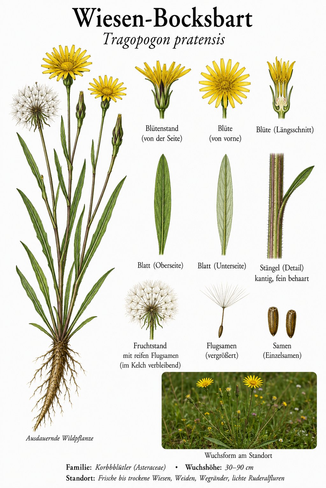

Frühaufsteher mit Mittagsschlaf — und einer Pusteblume in XXL.

Auf um sieben, zu um zwölf
Der Wiesen-Bocksbart öffnet seine gelben Blütenköpfe am frühen Morgen und schließt sie schon um die Mittagszeit wieder. Alte Volksnamen wie „Geiß, geh zu Bett“ oder „Johann geht um zwölf schlafen“ spielen genau darauf an. Wer ihn fotografieren will, sollte also früh aufstehen.
Die Riesen-Pusteblume
Ist die Blüte verblüht, entsteht eine kugelige Samenkrone wie beim Löwenzahn — nur viel größer, oft handballgroß. Jeder Samen trägt einen kunstvollen, schirmartigen Haarfallschirm. Ein einziger Atemstoß schickt eine ganze Wolke davon auf die Reise.
Wissenswertes & Merksätze
Erkennungszeichen
Gelbe, einzeln stehende Körbe; die spitzen Hüllblätter ragen über die Zungenblüten hinaus. Grasartige, bläulich-grüne Blätter; die Pflanze führt weißen Milchsaft.
Bocksbart auf dem Teller
Die Pfahlwurzel ist essbar und schmeckt mild — ein Verwandter, die Haferwurzel, war früher ein beliebtes Wintergemüse. Der „Bart“ im Namen meint die zottigen Samenschirme, die an einen Ziegenbart erinnern.